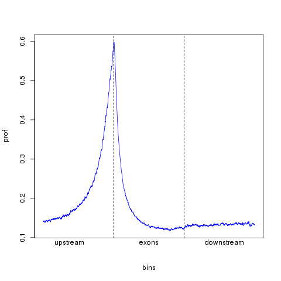

What is the binding profile of NFKB across gene models?¶
After processing RNA-seq data through alignment, gene/transcript abundance estimation and differential expression analysis, we are left with an unannotated list of differentially expressed genes. We may want to know whether there is evidence to suggest that these genes are regulated by a transcription factor of interest. We can answer this using ChIP-seq data that we ourselves have generated or by using public resources such as ENCODE.
For example, we have carried out an RNA-seq experiment in lymphoblastoid cell lines (LCLs) looking at the effect of TNF-a stimulation on gene expression. Using one of the many tools for conducting differential expression analysis we have arrived at a set of 133 genes that are up-regulated when LCLs are stimulated with TNF-a.
We know that the main transcription factor that drives expression of inflammatory genes using other immune stimulators is NFKB. We would therefore like to answer the question:
Is there evidence to support a role for NFKB in the regulation of genes regulated by TNF-a in LCLs?
ENCODE have produced many ChIP-seq data sets and by a stroke of luck they have NFKB ChIP-seq data in TNF-a stimulated LCLs. In an exploratory phase of the analysis, we would like to see what the profile of NFKB binding is across genes i.e does it bind predominantly at the TSS, exons or 3’ UTR. We can do this fairly easily with a few files and a few commands.
The input files that we require are:
A gtf file containing a complete set of known protein coding gene transcripts, which may be downloaded from ENSEMBL by typing:
wget ftp://ftp.ensembl.org/pub/release-73/gtf/homo_sapiens/Homo_sapiens.GRCh37.73.gtf.gz -o logfile
A file containing aligned NFKB ChIP-seq reads in bam format, which is available via UCSC:
wget http://hgdownload-test.cse.ucsc.edu/goldenPath/hg19/encodeDCC/wgEncodeSydhTfbs/wgEncodeSydhTfbsGm10847NfkbTnfaIggrabAlnRep1.bam -o logfile wget http://hgdownload-test.cse.ucsc.edu/goldenPath/hg19/encodeDCC/wgEncodeSydhTfbs/wgEncodeSydhTfbsGm10847NfkbTnfaIggrabAlnRep1.bam.bai -o logfile
We can then take all protein coding genes from this geneset with an awk statement:
zcat Homo_sapiens.GRCh37.73.gtf.gz | awk '$2=="protein_coding"' | gzip > coding_geneset.gtf.gz
Using the CGAT tool bam2geneprofile we can then assess the binding profile of NFKB across gene models:
cgat bam2geneprofile --bamfile=wgEncodeSydhTfbsGm10847NfkbTnfaIggrabAlnRep1.bam
--gtffile=coding_geneset.gtf.gz
--method=geneprofile
--profile_normalization=counts
--output-filename-pattern=nfkb_profile_%s
This statement will produce a matrix as an output file named “nfkb_profile.geneprofile.matrix.tsv.gz” with the following format:
bin region region_bin counts 0 upstream 0 0.22691292876 1 upstream 1 0.224274406332 2 upstream 2 0.221635883905 3 upstream 3 0.192612137203 4 upstream 4 0.221635883905 5 upstream 5 0.213720316623 6 upstream 6 0.213720316623 7 upstream 7 0.200527704485 8 upstream 8 0.20580474934
These data are amenable to further manipulation and visualisation. For example, we can use R to produce a profile plot over the gene model. Start R and type:
R version 2.15.2 (2012-10-26) -- "Trick or Treat"
Copyright (C) 2012 The R Foundation for Statistical Computing
ISBN 3-900051-07-0
Platform: x86_64-unknown-linux-gnu (64-bit)
R is free software and comes with ABSOLUTELY NO WARRANTY.
You are welcome to redistribute it under certain conditions.
Type 'license()' or 'licence()' for distribution details.
R is a collaborative project with many contributors.
Type 'contributors()' for more information and
'citation()' on how to cite R or R packages in publications.
Type 'demo()' for some demos, 'help()' for on-line help, or
'help.start()' for an HTML browser interface to help.
Type 'q()' to quit R.
> profile <- read.csv("nfkb_profile.geneprofile.matrix.tsv.gz", header = T, stringsAsFactors = F, sep = "\t")
> plot(profile$bin, profile$counts, cex = 0, xaxt = "none")
> lines(profile$bin, profile$counts, col = "blue")
> abline(v = c(1000, 2000), lty = 2)
> mtext("upstream", adj = 0.1)
> mtext("exons", adj = 0.5)
> mtext("downstream", adj = 0.9)
This set of commands will produce the figure shown.
This plot displays the predominance of NFKB binding at transcription start sites of protein coding genes.
Visulazing ChIP-seq read coverage across NFKB binding intervals¶
While NFKB binds to the TSSs of protein coding genes, it also binds to many intergenic regions of the genome. In addition to meta-gene profiles we may also want to know the chromatin state at which NFKB binding occurs. For example, we can integrate additional histone modification ChIP-seq data from the ENCODE project. H3K4me3 and H3K4me1 mark promoters and enhancers, respectively. We would like to visualise the profile of these marks at all the genomic locations of NFKB binding.
For this example we require three further files:
- A file containing bed intervals describing NFKB peaks (NFKB.bed), which may either be downloaded directly or created from the earlier bam file of NFKB ChIP-seq reads using a peak caller such as MACS.
- files containing aligned H3K4me1 and H3K4me3 ChIP-seq reads in bam format (H3K4me3.bam, H3K4me1.bam)
Using the CGAT tool bam2peakshape it is possible to produce a matrix depicting read coverage across all intervals in the supplied bed file.
The following command line statement
finds the peak of H3K4me3 read coverage within each interval
calculates coverage across a 1000bp window centered around this peak
outputs a matrix in which intervals are ranked by peak height.
outputs an equivalent matrix depicting H3K4me1 coverage across the same windows:
cgat bam2peakshape H3K4me3.bam NFKB.bed --control=H3K4me1.bam --sort=peak-height --output-filename-pattern=peakshape.%s > peakshape.table
Two files are produced named peakshape.matrix_peak_height.gz & peakshape.control_peak_height.gz that contain matrices depicting H3K4me3 coverage and H3K4me1 coverage across intervals, respectively.
Both matrices are amenable to plotting as heatmaps using the R package gplots:
> library( gplots )
> library( RColorBrewer )
> # read the H3K4me3 matrix into R
> me3 <- read.csv( "peakshape.matrix_peak_height.gz", header=TRUE, sep="\t", row.names=1 )
> # convert to matrix
> me3.matrix <- as.matrix( me3 )
> # A proportion of NFkB intervals have no discernable H3K4me3 or H3K4me1 coverage. These are removed before plotting.
> me3.matrix <- me3.matrix[ c( 4000, 14906 ), ]
> # the remainder are plotted
> cols <- brewer.pal( 9, "Blues" )
> heatmap.2( me3.matrix, col=cols, Rowv=F, Colv=F, labRow="", key=FALSE, labCol="", trace="none", dendrogram="none", breaks=seq(0, 1000, 101) )
> # A second plot can be produced for the H3K4me1 data
> me1 <- read.csv( "peakshape.control_peak_height.gz", header=T, sep="\t", row.names=1 )
> me1.matrix <- as.matrix( me3 )
> me1.matrix <- me1.matrix[ c( 4000, 14906 ), ]
> cols <- brewer.pal( 9, "Greens" )
> heatmap.2( me1.matrix, col=cols, Rowv=F, Colv=F, labRow="", key=FALSE, labCol="", trace="none", dendrogram="none", breaks=seq(0, 100, 11))
The resulting plots indicate that a subset of NFKB binding intervals may be characterised on the basis of their chromatin state:

H3K4me3

H3K4me1